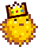

Stardew Valley Fan Communities
Enjoy a peaceful trip to Pelican Town
Come join the friendly fan communities of Stardew Valley!
Haven't played yet? Learn more about the game
here!
Join the official
Stardew Valley Discord
and chat with other fans of the game!
Already a member? View the
Discord leaderboard
to see our most active members!
Looking to spice things up with some
mods?
Or perhaps create your own with
SMAPI!
Discuss the game in the
forums!
Join the
subreddit.
Visit the
Steam discussion board

View
source code
Webpage © aquova 2020
Stardew Valley created by ConcernedApe LLC